-
PMS
Aplikacja desktopowa do zarządzania projektami
To intuicyjne narzędzie umożliwia planowanie i realizację projektów w jednym miejscu.
Dzięki przejrzystemu interfejsowi masz pełną kontrolę nad wszystkimi zadaniami.
Zintegrowane funkcje usprawniają pracę i podnoszą efektywność działań.

Zarządzanie projektami
Aplikacja prezentuje listę Twoich projektów i umożliwia pełną kontrolę nad nimi.
- Przeglądanie wszystkich projektów na jednej liście
- Dodawanie nowego projektu z nazwą i terminem zakończenia
- Edytowanie nazwy lub terminu istniejącego projektu
- Usuwanie niepotrzebnych projektów po potwierdzeniu
- Automatyczne odświeżanie listy, by zobaczyć najnowsze zmiany
- Automatyczne zapisywanie wszystkich projektów na raz, aby utrwalić modyfikacje
Po każdej operacji lista automatycznie się aktualizuje, a przy edycji lub usuwaniu system pyta o potwierdzenie, żeby uniknąć przypadkowych usunięć.
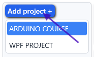
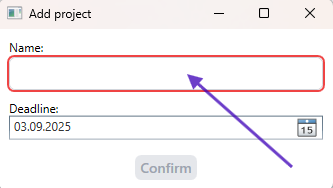
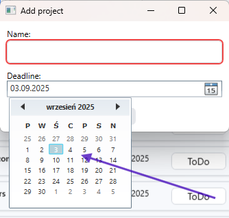
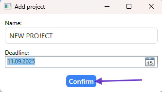
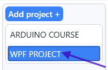
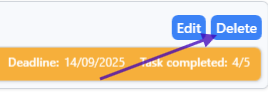
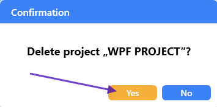
Zarządzanie zadaniami w projekcie
Po wybraniu konkretnego projektu widzisz listę wszystkich powiązanych zadań.
- Dodawanie nowego zadania z tytułem, opisem, priorytetem i terminem
- Usuwanie wybranych zadań z potwierdzeniem
- Zmiana tytułu, priorytetu lub terminu zadania w każdej chwili
- Automatyczne zapisywanie zmian w tle, bez dodatkowych przycisków
Dodatkowo możesz:
- Wyszukiwać zadania po dowolnym fragmencie tekstu (tytuł, opis, termin, stan czy priorytet)
- Sortować listę według tytułu (rosnąco/malejąco), priorytetu (↑ / ↓) lub terminu
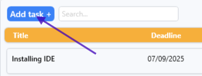
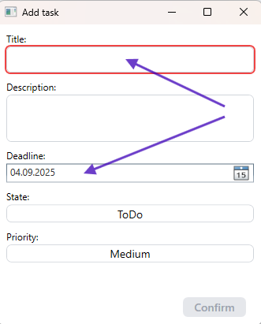
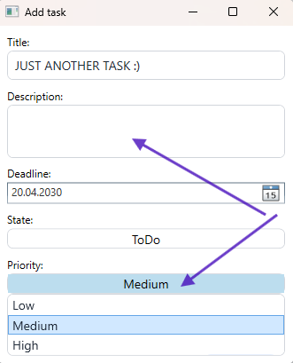
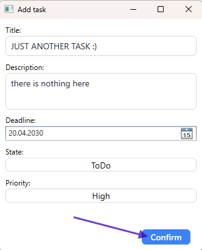
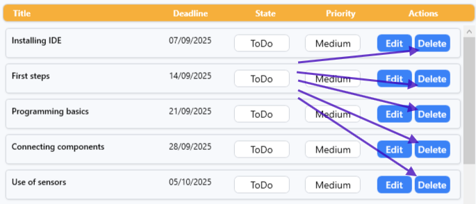
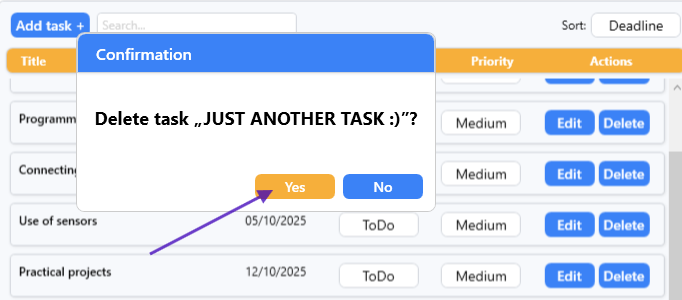
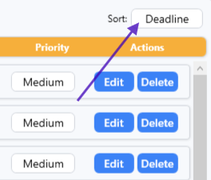
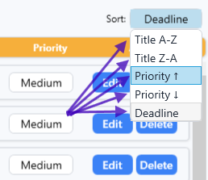
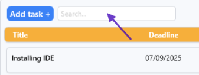
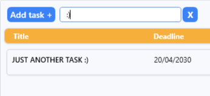
Synchronizacja wyboru projektu i listy zadań
Wybierając inny projekt, automatycznie przełączasz widok zadań na te powiązane z nowym projektem. Dzięki temu masz zawsze pod ręką tylko te zadania, które dotyczą aktualnie wybranego projektu.